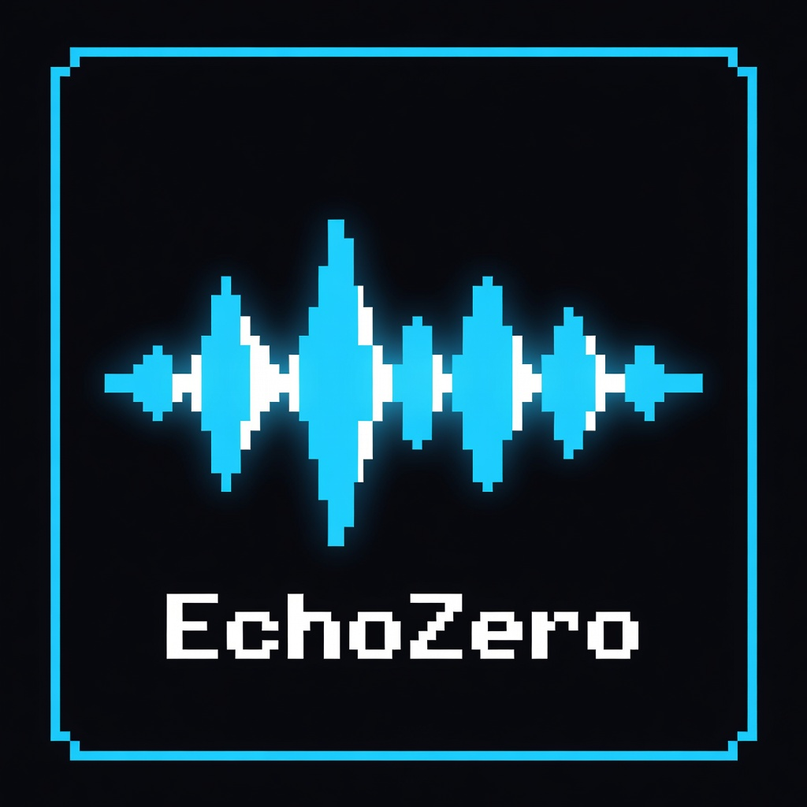

EchoZero — это независимый музыкальный лейбл нового поколения, объединяющий цифровую эстетику и бескомпромиссный звук. Мы верим в силу "нулевого резонанса" — момента, когда музыка становится чистой энергией.
История EchoZero началась в 2024 году. Идея создания площадки, которая стерла бы границы между независимыми разработчиками и музыкантами, зародилась как эксперимент внутри экосистемы IIP-DDS (FUGA), а изначальным автором являлась Boom Music Label (нынешний EchoZero Official).
Весь 2024 и 2025 годы лейбл находился в стадии закрытого планирования. В 2026 году EchoZero официально вышел из тени, став домом для проектов уровня MONTAGEM MIRA, KRISIC, CHIMPANZINI BANANINI FUNK и других. [cite: 2026-03-02]